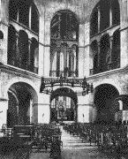

|
| A B C D E F G H I J K L M N O P Q R S T U V W X Y Z |
(In French, Aix-la-Chapelle, the name by which the city is generally known; in Latin Aquae Grani, later Aquisgranum).
The city of Aachen lies in a Prussian valley, surrounded by wooded heights, on the Wurm, a tributary of the Roer, on its way to the Meuse. Population, 1 December, 1905, 151,922 (including the Parish of Forst); Catholics, 139,485; Protestants, 10,552; Israelites, 1,658; other denominations, 227. 1990 Population: about 250,000 — Ed.
The city owes its origin to its salubrious springs which were already known in the time of the Romans. There appears to have been a royal court in Aachen under the Merovingians, but it rose to greater importance under Charlemagne who chose it as his favourite place of residence, adorned it with a noble-imperial palace and chapel, and gave orders that he should be buried there.
The precious relics obtained by Charlemagne and Otho III for the imperial chapel were the objects of great pilgrimages in the Middle Ages (the so-called "Shrine Pilgrimages") which drew countless swarms of pilgrims from Germany, Austria, Hungary, England, Sweden, and other countries. From the middle of the fourteenth century onwards, however it became customary to expose the four great relics only once in every seven years, a custom which still holds. These pilgrimages, the coronations of the German emperors (thirty-seven of whom were crowned there between 813 and 1531), the flourishing industries and the privileges conferred by the various emperors combined to make Aachen one of the first cities of the Empire.
The decay of Aachen dates from the religious strife of the German Reformation. Albrecht von Muenster first preached Protestantism there in the year 1524 but was afterwards forbidden to preach the new views and executed on account of two murders committed during his stay in the cities of Maastricht and Wesel. A new Protestant community was soon, however, formed in Aachen, which gradually attained such strength as to provoke a rising in 1581, force the election of a Protestant burgomaster, and defy the Emperor for several years. The Ban of the empire was, therefore, pronounced against the city in 1597 and put in force by the Duke of Julich, the Catholic overlord of the city. The Catholics were restored to their rights, and the Jesuits invited to Aachen, in 1600. In 1611, however, the Protestants rose afresh, plundered the Jesuit college, drove out the Catholic officials in 1612, and opened their gates to troops from Brandenburg. The Ban of the Empire was again laid on the city, and executed by the Spanish general, Spinola. The Protestant ringleaders were tried or exiled, and many other Protestants banished. These troubles, together with a great fire which destroyed 4,000 houses, put an end to the prosperity of the city.
Two treaties of peace were concluded at Aachen during the seventeenth and eighteenth centuries. By the first, dated 2 May 1668, Louis XIV was compelled, by the Triple Alliance between England, the Netherlands, and Sweden, to abandon the war against the Spanish Netherlands, to restore the Franche Comte, which he had conquered, and to content himself with twelve Flemish fortresses. The second treaty, dated 18 October, 1748, put an end to the War of the Austrian Succession. In 1793 and 1794, Aachen was occupied by the French, incorporated with the French Republic in 1798 and 1802, and made the capital of the Department of the Roer. By the terms of the French Concordat of 1801 Aachen was made a bishopric subject to the Archbishop of Mechlin, and composed of 79 first class, and 754 second class, parishes. The first and only bishop was Marcus Antonius Berdolet (b. 13 September, 1740, at Rougemont, in Alsace 3; d. 13 August, 1809), who, for the most part, left the government of his diocese to his vicar-general, Martin Wilhelm Fonck (b. 28 October, 1752, at Goch; d. 26 June, 1830, as Provost of Cologne Cathedral). After the death of Bishop Berdolet the diocese was governed by Le Camus, Vicar General of Meaux; after his death, in 1814, by the two vicars-general Fonck and Klinkenberg. The Bull of Pius VII, "De Salute Animarum," dated 16 July, 1821 which regulated church matters in Prussia anew, did away with the bishopric of Aachen, and transferred most of its territory to the archdiocese of Cologne; a collegiate chapter, consisting of a provost and six canons, taking the place of the bishopric in 1825. In 1815 Aachen became Prussian territory. The Congress of Aix-la-Chapelle sat there from 30 September to 11 November, 1818, and was attended by the sovereigns of Russia, Austria, and Prussia, and by plenipotentiaries from France and England, to determine the relations between France and the Powers. France obtained a reduction of the war indemnity and the early departure of the army of occupation, and joined the Holy Alliance; the other four Powers guaranteed the throne of France to the Bourbons, against any revolution that might occur. Aachen, under Prussian government, returned to prosperity, chiefly through the development of the coal mines in the neighborhood, which facilitated several extensive industries (such as the manufacture of linen, needles, machinery, glass, woolen, and half-woollen stuffs, etc.), but also in consequence of the large number of visitors to its hot springs.
 The minster ranks first among the church buildings; it consists of three distinct parts: the octagon, the choir, and the crown, or ring, of chapels, the octagon forming the central portion. This last is the most important monument of Carolingian architecture, it was built between 796 and 804, in the reign of Charlemagne, by Master Odo of Metz, and modelled after the Italian circular church of San Vitale at Ravenna. It was consecrated by Pope Leo III. It is an eight-angled, domed building, 54 feet in diameter, with a sixteen-sided circumference of 120 feet, and a height of 124 feet. The interior of the dome is adorned with mosaics on a gold ground, executed by Salviati of Venice, in 1882, representing Our Lord surrounded by the four and twenty Ancients of the Apocalypse. The main building was decorated with marble and mosaics in 1902, after the designs of H. Schaper. Over the spot supposed to be the site of Charlemagne's grave hangs an enormous corona of lamps, the gift of the Emperor Frederick I, Barbarossa; in the choir of the octagon, the so-called upper minster, stands Charlemagne's throne, made of great-slabs of white marble, where, after the coronation, the German emperors received the homage of their nobles. The rich upper choir, built in Gothic style, joins on to the eastern side of the octagon; it was begun in the second half of the fourteenth century, and dedicated in 1414. The thirteen windows, each 100 feet high, have been filled with new coloured glass; on the pillars between them stand fourteen statues (the Mother of God, the Twelve Apostles, and Charlemagne), dating from the fifteenth century. Among the treasures of the choir should be mentioned the famous Gospel-pulpit, enriched with gold plates, the gift of the Emperor Henry II, the throne canopy of the fifteenth century the new Gothic high altar of 1876, and the memorial stone which marks the spot where the Emperor Otto III formerly lay. The lower portions of the bell-tower, to the west of the octagon, belong to the Carolingian period, the Gothic superstructure dates from 1884. Of the chapels which surround the whole building, the so-called Hungarian chapel contains the minster treasury, which includes a large number of relics, vessels, and vestments, the most important being those known as the four "Great Relics," namely, the cloak of the Blessed Virgin, the swaddling-clothes of the Infant Jesus, the loin-cloth worn by Our Lord on the Cross, and the cloth on which lay the head of St. John the Baptist after his beheading. They are exposed every seven years and venerated by thousands of pilgrims.
Among the other Catholic churches of Aachen, the following may be mentioned:
In Aachen there are foundations established by the Franciscans, Capuchins, Alexians, and Redemptorists. A number of female orders also have establishments, including:
A number of important councils were held here in the early Middle Ages.
In the mixed council of 798, Charlemagne proclaimed an important capitulary of eighty-one chapters, largely a repetition of earlier ecclesiastical legislation, that was accepted by the clergy and acquired canonical authority.
At the council of 799, after a discussion of six days Felix, Bishop of Urgel, in Spain, avowed himself overcome by Alcuin and withdrew his heretical theory of Adoptianism.
In the synods of 816, 817, 818, and 819, clerical and monastic discipline was the chief issue, and the famous "Regula Aquensis" was made obligatory on all establishments of canons and canonesses (see WESTERN MONASTICISM), while a new revision of the Rule of St. Benedict was imposed on the monks of that order by the reformer Benedict of Aniane.
The synod of 836 was largely attended and devoted itself to the restoration of ecclesiastical discipline that had been gravely affected by the civil wars between Louis the Pious and his sons.
From 860 to 862 three councils were occupied with the question of the divorce of King Lothaire I from his wife, Theutberga.
In 1166 took place the famous schismatic council, approved by the Antipope Paschal III, in which was decreed the canonization of Charlemagne, that was solemnly celebrated 29 December of that year.
APA citation. (1907). Aachen. In The Catholic Encyclopedia. New York: Robert Appleton Company. Retrieved April 26, 2010 from New Advent: http://www.newadvent.org/cathen/01001a.htm
MLA citation. "Aachen." The Catholic Encyclopedia. Vol. 1. New York: Robert Appleton Company, 1907. 26 Apr. 2010 <http://www.newadvent.org/cathen/01001a.htm>.
Transcription. This article was transcribed for New Advent by Tomas Hancil.
Ecclesiastical approbation. Nihil Obstat. March 1, 1907. Remy Lafort, S.T.D., Censor. Imprimatur. +John Cardinal Farley, Archbishop of New York.
Contact information. The editor of New Advent is Kevin Knight. My email address is webmaster at newadvent.org. (To help fight spam, this address might change occasionally.) Regrettably, I can't reply to every letter, but I greatly appreciate your feedback — especially notifications about typographical errors and inappropriate ads.
{kind=link}
{kind=link}